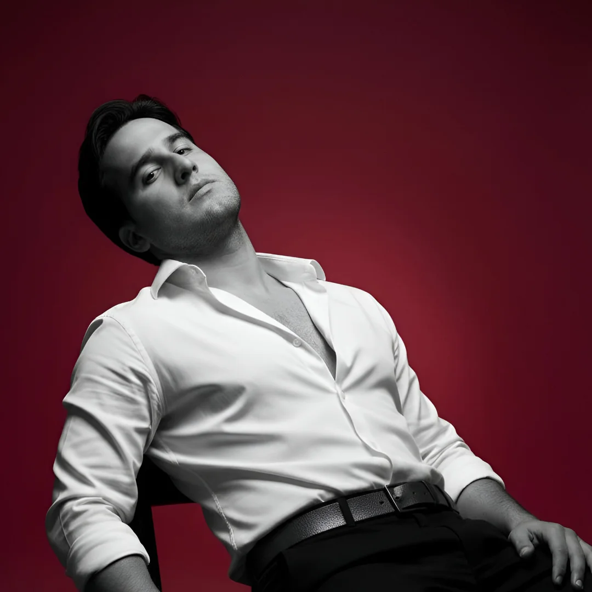

Luis
Enrique
Azuaje
Tovar
Estudiante de informática · desarrollador full stack. Creo experiencias digitales sólidas, seguras y con diseño impecable.

Trazo profesional
Estudiante de último semestre de Informática con enfoque en desarrollo full stack. Apasionado por crear soluciones web funcionales y bien diseñadas, aplicando tecnologías modernas tanto en el frontend como en el backend. Actualmente desarrollo un sistema para mi universidad que optimiza la gestión de información y previene fugas de datos. He completado proyectos para clientes reales (podcast y tienda online), lo que me ha permitido afianzar mis habilidades técnicas y mi capacidad para entender necesidades del usuario. Me caracterizo por ser autodidacta, meticuloso y orientado a resultados.
Educación
Universidad Politécnica Territorial de Valencia
TSU en Informática · 2022 – actualidad
- Desarrollo de software, bases de datos, sistemas
- Proyectos académicos integradores
Proyectos que marcan diferencia
Sistema de Gestión en desarrollo
Plataforma para universidad: seguridad, usabilidad y datos académicos.
Sitio web para Podcast
Difusión de episodios, contenido multimedia y suscripción.
Tienda online de relojes
E-commerce de réplicas de alta calidad.
Stack tecnológico
Habilidades humanas
Disponibilidad inmediata listo para colaborar
¿Construimos algo grande juntos?
Respuesta rápida, código limpio y pasión por los detalles.
📞 +58 412-179-3453 (también llamadas)